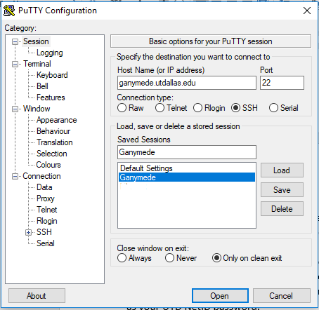
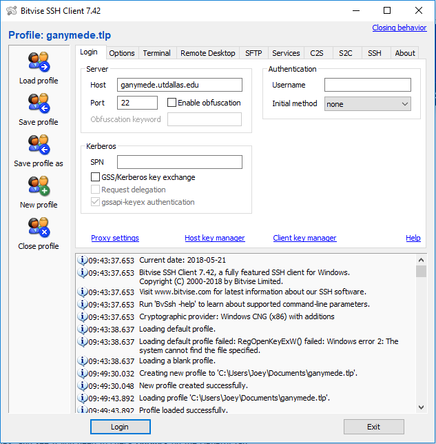

UTDallas HPC Cluster Users Guide¶
Table of Contents
Acceptable User Guidelines¶
OIT CI Research Computing (OIT-CIRC) resources are deployed, configured, and operated to serve a large, diverse user community. It is important that all users are aware of and abide by OIT-CIRC Usage Policies. Failure to do so may result in suspension or cancellation of the project and associated allocation and closure of all associated logins. Illegal transgressions will be addressed through University of Texas at Dallas (UT-D) and/or legal authorities. See the Acceptable User Guidelines for more information.
Introduction¶
What is Ganymede:
Ganymede is a 4008 core cluster with 14 TB of memory based on Centos 7.5 / OpenHPC. It has a 10 Gigabit ethernet network and a QDR (40 Gbps) InfiniBand interconnect configured in a fat-tree topology. It has two distributed file systems, one for the home directories over the 10 Gigabit Ethernet network available via NFS and one for the work file system that is a 525 TB high-performance parallel file system (GPFS) accessible over the InfiniBand network. The GPFS file system uses Data Direct Networks (DDN) directly attached to InfiniBand storage for the back end hardware. Compute nodes are all dual processor with many core systems with a variety of Intel architectures including Sandy Bridge, Haswell and Broadwell. Additionally, several nodes in the system have Nvidia Quadro GPUs based on the Nvidia Kepler architecture.
What is SLURM:
Slurm is an open source, fault-tolerant, and highly scalable cluster management and job scheduling system for large Linux clusters. Slurm requires no kernel modifications for its operation and is relatively self-contained. As a cluster workload manager, Slurm has three key functions. First, it allocates exclusive to resources (compute nodes) to users for some duration of time so they can perform work. Second, it provides a framework for starting, executing, and monitoring work (normally a parallel job) on the set of allocated nodes. Finally, it arbitrates contention for resources by managing a queue of pending work.
- What is OpenHPC:
OpenHPC provides a collection of prebuilt software components common in HPC environments, such as provisioning tools, resource managers, I/O libraries, development tools, and a variety of scientific libraries.
1 - Connecting to Ganymede¶
It is important to note that the individual nodes can only be accessed after the user has logged into the Ganymede node, and have a running job on compute nodes.
1.1 - Microsoft Windows¶
Once the user’s account has been created the user can access Ganymede using multiple Secure Shell (SSH) terminal software such as:
PuTTY
Bitwise
MobaXterm
This guide is written from the prospective that the user is connected to the UT Dallas network. If the user is working outside of the UT Dallas network, follow the VPN guide at https://www.utdallas.edu/oit/vpn/ or to connect via the command line the SSH guide at https://www.utdallas.edu/oit/howto/create-an-ssh-connection/ to connect to the campus securely.
1.1.1 - PuTTY:¶
PuTTY for the Microsoft Windows environment can be installed by going to www.putty.org. Download and install the latest version of Putty.

Once running PuTTY, in the Host Name section type ganymede.utdallas.edu. Go down to the saved sessions section, name the server with a meaningful name (in this case Ganymede) and press save. By doing this, time can be saved in the future by clicking your particular saved session and pressing load. Once loaded into the host name, click on the open button.

A Putty Security Alert window will open for the first time prompting you for a Yes/No/Cancel answer to the question of saving a new host key. Click the Yes button and now you will be asked for login-id and password. Your login-id is your UTD NetID and your password is the same as your UTD NetID password.
1.1.2 - Bitvise:¶
Bitvise can be installed by going to https://www.bitvise.com/index and pressing the download tab across the top banner. Press the first option, Download Bitvise SSH Client (Tunnelier) the press Bitvise SSH Client Installer and follow the instructions for to install the software. Similar to PuTTY, the Host Name section type ganymede.utdallas.edu. Go down to the “Save profile as” button, name the file with a meaningful name (in this case ganymede.tlp) and press save. By doing this, time can be saved in the future by clicking “Load profile”. Once loaded into the host name, click on the Login button.
1.1.3 - MobaXTerm:¶
MobaXterm can be installed from http://mobaxterm.mobatek.net/download.html. The program can be demo-ed from site http://mobaxterm.mobatek.net/demo.html.
To login, type ssh <NetID>@ganymede.utdallas.edu. Once logged in, all of the available Linux files and directory information will be displayed on the left white pane. Within the MobaXterm interface, one can securely copy files between Linux and Windows desktops. To open a file, right click on it and choosing option “open with default text editor”. Changes can then be made to a file and the changes can then be saved.
1.2 - For Mac Users¶
For MAC users MobaXterm is not available. Install XQuartz from https://www.xquartz.org. Additionally, the user could use terminal application as an SSH terminal client.
1.3 - For Linux Users¶
For Linux users, the ssh command is built into the operating system. To connect to the Ganymede server, open the terminal agent and type: ssh <NET-ID>@ganymede.utdallas.edu.
1.4 - Mailing List¶
Another way for users to connect to Ganymede is to connect with other users. The admin team has set up a mailing list that can allow users to interact with each other and find solutions through searchable archives. Because the admins are members of the group, timely answers and solutions pass through the group. The users should think of this as an additional form of documentation to reference. This list can be accessed at ganymedeusers@lists.utdallas.edu.
2 - Moving around Ganymede¶
Now that the user is logged in, lets navigate around Ganymede using Linux shell commands:
2.1 - Linux Commands¶
A basic knowledge of Linux commands is required to effectively use the Ganymede system. If you have basic knowledge of Linux Commands and Shell Scripting, feel free to skip this section. Note that a condensed version of useful Linux Commands can be found in Appendix A.
2.1.1 - Moving Around¶
First, it is important to know where one is in the system in order to move around to desired directories (sometimes called folders). The first function prints the working (current) directory.
{pubssh:~/home} pwd
/home/013/j/jx/jxw150830/home
The next step is to see what folders exist in the home directory, in order to know where to move around. The fastest way to do this is to use ls, the list command.
{pubssh:~/home} ls
Documents Downloads real.log
The list command has additional functionality that allows for long form to give more information about the files and folders that exist on the server by running ls -l.
{pubssh:~/home} ls -l
total 4
drwx--x--x+ 4 jxw150830 ee 5 May 21 2018 Documents
drwx--x--x+ 2 jxw150830 ee 2 May 21 11:05 Downloads
-rw-------+ 1 jxw150830 ee 0 May 21 2018 real.log
There are a couple of things worth noting. The first set of letters show the permissions of the different files and directories. In fact, the Linux environment treats everything as a file, with the only difference in the directory having the d on the first line. Because of this, files can be saved with any extension of any length.
Sometimes it is useful to see what is in another directory while not moving out of the current directory; this can be achieved by asking the list function to go somewhere else.
{pubssh:~/home} ls Documents/
Old-Photos Research Sample.txt
Now that possible directories to move into have been identified, the next step is to move into one. This is done by changing the directory, or cd.
{pubssh:~/home} cd Documents/
{pubssh:~/home/Documents}
The next logical step is to list what items are in the directory.
{pubssh:~/home/Documents} ls
Old-Photos Research Sample.txt
Note that the only difference between this listing and the listing of this directory from before was that the user had to move to the directory to get the listing in the second case.
The next example will show how to move into a directory, list the contents, and then back out using the cd .. command.
{pubssh:~/home/Documents} cd Research/
{pubssh:~/home/Documents/Research} ls
datafile.dat
{pubssh:~/home/Documents/Research} cd ..
{pubssh:~/home/Documents} ls
Old-Photos Research Sample.txt
2.1.2 - Making Files and Directories¶
Now that the user can move around, next is to make files and directories. First, to create a new file in /home/Documents/Research, we will move into /Research and create the file using the touch command.
{pubssh:~/home/Documents/Research} touch project-day1
{pubssh:~/home/Documents/Research} ls
datafile.dat project-day1
The touch command can also be used to create multiple files at a time, with or without file extensions.
{pubssh:~/home/Documents/Research} touch project-day2 project-day3 bigdata.dat
{pubssh:~/home/Documents/Research} ls
bigdata.dat datafile.dat project-day1 project-day2 project-day3
The function to make directories, mkdir, is very similar to touch. A single directory can be created, or multiple directories can be created if divided by spaces.
{pubssh:~/home/Documents/Research} mkdir project\ files datafiles
{pubssh:~/home/Documents/Research} ls -l
total 4
-rw-------+ 1 jxw150830 ee 0 May 21 11:48 bigdata.dat
-rw-------+ 1 jxw150830 ee 0 May 21 11:37 datafile.dat
drwx--x--x+ 2 jxw150830 ee 2 May 21 2018 datafiles
-rw-------+ 1 jxw150830 ee 0 May 21 11:45 project-day1
-rw-------+ 1 jxw150830 ee 0 May 21 11:48 project-day2
-rw-------+ 1 jxw150830 ee 0 May 21 11:48 project-day3
drwx--x--x+ 2 jxw150830 ee 2 May 21 2018 project files
Note that the “\ ” allows the user to define spaces in naming both files and directories.
2.1.3 - Moving Files and Directories¶
Now that the user has created files and directories, it may be valuable to move them using the command mv. To begin, we will move the data files and project files into the appropriate directories.:
{pubssh:~/home/Documents/Research} mv datafile.dat datafiles/
{pubssh:~/home/Documents/Research} mv -t project\ files/ project-day1 project-day2 project-day3
{pubssh:~/home/Documents/Research} ls -Rl
.:
total 4
-rw-------+ 1 jxw150830 ee 0 May 21 11:48 bigdata.dat
drwx--x--x+ 2 jxw150830 ee 3 May 21 2018 datafiles
drwx--x--x+ 2 jxw150830 ee 5 May 21 13:09 project files
./datafiles:
total 1
-rw-------+ 1 jxw150830 ee 0 May 21 11:37 datafile.dat
./project files:
total 2
-rw-------+ 1 jxw150830 ee 0 May 21 11:45 project-day1
-rw-------+ 1 jxw150830 ee 0 May 21 11:48 project-day2
-rw-------+ 1 jxw150830 ee 0 May 21 11:48 project-day3
Note two things: First is the change in the set up for doing one file mv <source> <destination> to mv -t <destination> <source1> <source2> <sourcenth>. The second is that the ls -R command allows the user to list recursively files and directories that are upstream of the current directory.
There is no specific command that is used for the renaming of files. Instead, the user must move the file over itself with the new name. In the following example, it will be assumed that the project-day files should have had the file extension .prj at the end.
{pubssh:~/home/Documents/Research/project files} mv project-day1 project-day1.prj
{pubssh:~/home/Documents/Research/project files} mv project-day2 project-day2.prj
{pubssh:~/home/Documents/Research/project files} mv project-day3 project-day3.prj
{pubssh:~/home/Documents/Research/project files} ls
project-day1.prj project-day2.prj project-day3.prj
Moving directories is a very similar process to the moving of files.
{pubssh:~/home/Documents/Research} mv project\ files/ datafiles/
{pubssh:~/home/Documents/Research} ls -lR
.:
total 2
-rw-------+ 1 jxw150830 ee 0 May 21 11:48 bigdata.dat
drwx--x--x+ 3 jxw150830 ee 4 May 21 2018 datafiles
./datafiles:
total 2
-rw-------+ 1 jxw150830 ee 0 May 21 11:37 datafile.dat
drwx--x--x+ 2 jxw150830 ee 5 May 21 2018 project files
./datafiles/project files:
total 2
-rw-------+ 1 jxw150830 ee 0 May 21 11:45 project-day1.prj
-rw-------+ 1 jxw150830 ee 0 May 21 11:48 project-day2.prj
-rw-------+ 1 jxw150830 ee 0 May 21 11:48 project-day3.prj
To move files to or from the Ganymede server, the use of secure copying is used, scp. The method below will detail how to move a file from the Ganymede server to the user’s computer via the command line, but the process would be similar for data moving the other direction.
{pubssh:~} scp ./gany.sh jxw150830@ganymede.utdallas.edu:/home/jxw150830/
jxw150830@ganymede.utdallas.edu's password:
gany.sh 100% 51 0.1KB/s 00:00
{pubssh:~}
The above example is moving information from a user’s home folder on the server to the Ganymede home area. Note that this process could go backwards as well.
Another tool that is useful for keeping items up to date through remote synchronization is rsync. The rsync command works to keep items up to date across multiple devices by updating information that has changed. This method of keeping files up to date is more time efficient for large data sets where only minor changes are made; that is, the changes, instead of the data set, will be moved.
{pubssh:~} rsync -avtr ./dataset/ jxw150830@ganymede.utdallas.edu:/home/jxw150830/
jxw150830@ganymede.utdallas.edu's password:
sending incremental file list
./
data1.dat
data2.dat
data3.dat
sent 203 bytes received 72 bytes 36.67 bytes/sec
total size is 0 speedup is 0.00
{pubssh:~}
In the above example, each item is moved to Ganymede. If the user does not want to see all of the files transferred, the user can remove -v. Similarly, the -r is the recursive command which will go down the folder structure to extract everything. The -at should remain for file continuity. If the user were to run the same command again, notice that a small amount of data was sent to check for updates, but the full files were not resent.
{pubssh:~} rsync -avtr ./dataset/ jxw150830@ganymede.utdallas.edu:/home/jxw150830/
jxw150830@ganymede.utdallas.edu's password:
sending incremental file list
sent 83 bytes received 12 bytes 12.67 bytes/sec
total size is 0 speedup is 0.00
{pubssh:~}
2.1.4 - Removing Files and Directories¶
Often times files or directories are made in error or are no longer needed. To remove an item, you use the remove tool rm.
{pubssh:~/home/Documents/Research/datafiles} ls
datafile.dat project files
{pubssh:~/home/Documents/Research/datafiles} rm datafile.dat
rm: remove regular empty file `datafile.dat'? y
{pubssh:~/home/Documents/Research/datafiles} ls
project files
Remove will not let you remove a directory that has files in it. With one or two files, removing them is not a time-consuming issue. However, with nested directories, this can be a very time-consuming task to empty each level before removal. This can be worked around, however, by using the command rm -r (for recursive).
{pubssh:~/home/Documents/Research} rm datafiles/
rm: cannot remove `datafiles/': Is a directory
{pubssh:~/home/Documents/Research} rm -r datafiles/
{pubssh:~/home/Documents/Research} ls
bigdata.dat
2.1.5 - Viewing and Editing Files¶
Now that the file and directory structure are in the right place, the user has multiple options for viewing and editing.
For viewing short files, simply using the cat <filename> command allows the user to see the file printed out in the command line.
{pubssh:~/home/Documents} cat Sample.txt
This is a sample Document
This document has multiple lines
{pubssh:~/home/Documents}
To view longer files, using the command cat <filename> | less allows the user to scroll through a long file. Pressing the q key will release the user from the prompt.
For editing files there are multiple options. The programs vim (https://www.vim.org/) and nano (https://www.nano-editor.org/) are popular projects that come fairly standard on most machines. Beyond those, there are additional well documented programs out there that allow for the user to edit in the command line but explaining them is out of the scope of this document.
2.1.6 - Automating Commands¶
Many of the commands that have been executed, if needed to be executed over and over, would be very time consuming. To allow for this sort of automation, including the option of user input, there is the shell script. The bash shell script allows for the user to write programs that consist of other programs or commands that are build into the Linux environment. The concept of this will be familiar to those users that are familiar with Matlab programming.
Every shell script must have the file extension .sh and start with and have nothing else but the line: #! /bin/bash This is followed by the commands in the script. The command echo is useful in scripts for printing out to the command line information about what is going on. To run the script, run bash <script name>.
{pubssh:~/home/Documents} cat hw.sh
#! /bin/bash
# This is a comment and is useful
echo " Hello World"
{pubssh:~/home/Documents} bash hw.sh
Hello World
The shell script can be a powerful tool, especially when variables are introduced. There are two types of shell script input, those passed in the command line before hand and those begotten during the run process. To put in input to the command line, follow this example.
{pubssh:~/home/Documents} cat nameupfront.sh
#! /bin/bash
# This will get it upfront
# from the user input
echo "Your name is: $1"
{pubssh:~/home/Documents} bash nameupfront.sh Ganymede
Your name is: Ganymede
To get the input during runtime, the user can read in the value of variables. These variables can be named anything the user would like, and are reached with the $<varName> portion of the command.
{pubssh:~/home/Documents} cat namelive.sh
#! /bin/bash
# This program asks during
echo "What is your name? :"
read name
echo "Hello $name"
{pubssh:~/home/Documents} bash namelive.sh
What is your name? :
Ganymede
Hello Ganymede
2.2 - Ganymede Specific Instructions and Programs¶
2.2.1 - Environmental Variables¶
In Ganymede, there are specific environmental varables that are designed to save the user time. The following table shows the variables with their respective equivalent values.
Variable |
Equivalent Value |
|---|---|
|
The user’s NetID |
|
|
|
|
These environmental variables are save the user time in typing locations. Additionally, these can be used by the user in any shell script or command that is input.
2.2.2 - Custom Programs¶
To save time, a command has been created to directly change the user’s directory to the Scratch directory. This command to change to scratch is cds.
[jxw150830@ganymede ~]$ pwd
/home/jxw150830
[jxw150830@ganymede ~]$ cds
[jxw150830@ganymede jxw150830]$ pwd
/petastore/ganymede/scratch/jxw150830
[jxw150830@ganymede jxw150830]$
3 - Ganymede Space Constraints¶
One of the important considerations in High Performance Computing is the amount of space that is allocated to each user. The Ganymede cluster is space allocated to provide the maximum amount of space while still providing desirable attributes to the cluster user.
3.1 - Types of Space¶
There are currently 2 types of space available to the user, home space and scratch space. Home space is located in the /home/$USER folder and the scratch folder is located in the /petastore/ganymede/scratch/$USER folder. For convenience, the scratch folder is symbolically linked inside the user’s home folder in /home/$USER/scratch The following table compares the attributes of the two available spaces.
Attributes |
Home Space |
Scratch Space |
|---|---|---|
Purpose of the Space |
To house scripts, source code and output data. |
To have a large area for working with data or trying ideas |
Backed Up |
Yes |
No |
3.2 - Space Policies¶
In addition to the attributes listed above, there are space considerations that need to be addressed due to limited storage. Each of the users must stay within a certain quota. Should the quota be exceeded, the user will be warned by the following statement : dm-0: warning, user block quota exceeded. The user will not loose data, but instead is given a short period of time to comply to the block quota. If the user runs a process that exceeds the Hard Limit, then the process will be stopped and the user will get the following error : dm-0: write failed, user block limit reached. The following table compares the different space limitations that exist on the particular
Attributes |
Home Space |
Scratch Space |
|---|---|---|
Hard Limit |
20 GB |
None |
Soft Limit |
30 GB * |
None † |
Days to Comply |
7 Days |
N/A |
- *
The scratch space is located in
/petastore/ganymede/scratch/$USERbut does not count against the storage in the home space, even with the symbolic link.- †
While the petabyte storage device is not metered, the scratch space should be cleaned up when a project is finished to ensure that there is enough room for others interested in using the space.
3.3 - Checking Available Space¶
The user should be aware of the amount of free space that is remaining, in order to ensure that the user does not run out of space for data during a run of a program or module. In order to check the amount of space, the user needs to check the quota.
[jxw150830@ganymede ~]$ quota -s
Disk quotas for user jxw150830 (uid 532471):
Filesystem space quota limit grace files quota limit grace
/dev/mapper/volgroup0-lvolexport
44K 20000M 30000M 11 0 0
In the case above, the entire 20 GB is available to be used. After running a couple of processes, the /home space is filled above the quota.
[jxw150830@ganymede ~]$ quota -s
Disk quotas for user jxw150830 (uid 532471):
Filesystem space quota limit grace files quota limit grace
/dev/mapper/volgroup0-lvolexport
22529M* 20000M 30000M 6days 13 0 0
Note that the number of days in the grace period will slowly go down until the user is out of compliance completely. At this point, if the amount of time runs out, the user will no longer be able to write new data until they move below the 20 GB threshold. If at any point the user goes above 30 GB, the user will immediately loose the ability to write until the /home directory is brought back into compliance.
4 - Ganymede Compilers and Modules¶
The compilers, MPI stacks, and environmental modules are all considered modules. All environmental functionality are controlled by the modules system.
4.1 - Modules¶
Modules allow the user to set up an environment in the way that best fits their needs. Many of the modules are cross compiled with a number of different compilers to give the HPC cluster a large amount of flexibility. If you notice a module that you would like installed but is not, please send an email to ganymedeadmins@utdallas.edu.
4.1.1 - Displaying Loaded Modules¶
The first step a user should follow is to display the modules that are currently loaded by their account. This is done using the module list command.
[jxw150830@ganymede ~]$ module list
Currently Loaded Modules:
1) autotools 2) prun/1.2 3) intel/18.0.2.199 4) mvapich2/2.2 5) ohpc
Notice that each of the modules is shown along with the version has been compiled for that program.
4.1.2 - Listing Available Modules¶
The user can list the modules that have been loaded into their account, but with the different dependencies that are available for each of these modules.
[jxw150830@ganymede ~]$ module avail
------------------------------------------------ /opt/ohpc/pub/moduledeps/intel-mvapich2 ------------------------------------------------
adios/1.13.0 mfem/3.3.2 netcdf/4.5.0 ptscotch/6.0.4 scalasca/2.3.1 superlu_dist/5.3.0
boost/1.66.0 mumps/5.1.2 petsc/3.8.3 py2-mpi4py/3.0.0 scorep/3.1 tau/2.27
hypre/2.13.0 netcdf-cxx/4.3.0 phdf5/1.10.1 py3-mpi4py/3.0.0 sionlib/1.7.1 trilinos/12.12.1
imb/2018.1 netcdf-fortran/4.4.4 pnetcdf/1.8.1 scalapack/2.0.2 slepc/3.8.2
---------------------------------------------------- /opt/ohpc/pub/moduledeps/intel -----------------------------------------------------
hdf5/1.10.1 likwid/4.3.1 mpich/3.2.1 ocr/1.0.1 pdtoolkit/3.25 py2-numpy/1.14.2 scotch/6.0.4
impi/2018.2.199 metis/5.1.0 mvapich2/2.2 (L) openmpi3/3.0.0 plasma/2.8.0 py3-numpy/1.14.2 superlu/5.2.1
------------------------------------------------------- /opt/ohpc/pub/modulefiles -------------------------------------------------------
anaconda2/5.1.0 cplex/12.8.0 intel/18.0.2.199 (L) pmix/2.1.1 valgrind/3.13.0
autotools (L) gnu7/7.3.0 ohpc (L) prun/1.2 (L)
cmake/3.10.2 gurobi/8.0.0 papi/5.6.0 singularity/2.4.5
Where:
L: Module is loaded
Use "module spider" to find all possible modules.
Use "module keyword key1 key2 ..." to search for all possible modules matching any of the "keys".
4.1.3 - Adding Modules to a User’s Account¶
A number of modules exist that are not initially loaded into the user’s account. The first step in finding a module that the user wants is to search for it using the spider command. To list all available packages, type module spider. To search more specifically, type module spider <name of software package>.
[jxw150830@ganymede ~]$ module spider py2
-----------------------------------------------------------------------------------
py2-mpi4py:
-----------------------------------------------------------------------------------
Description:
Python bindings for the Message Passing Interface (MPI) standard.
Versions:
py2-mpi4py/3.0.0
<...output continues...>
Now that the correct version and name has been found, the next step is to load the desired module or modules to the user’s account, using module load <modulename>.
[jxw150830@ganymede ~]$ module load py2-mpi4py
[jxw150830@ganymede ~]$ module list
Currently Loaded Modules:
1) autotools 2) prun/1.2 3) intel/18.0.2.199 4) mvapich2/2.2 5) ohpc 6) py2-mpi4py/3.0.0
Now the desired module has been added to the environment.
4.1.4 - Removing Modules From Your Account¶
When the user no longer needs a module, the module can be removed, or unloaded, by using the command module unload <modulename>.
[jxw150830@ganymede ~]$ module unload py2-mpi4py/3.0.0
[jxw150830@ganymede ~]$ module list
Currently Loaded Modules:
1) autotools 2) prun/1.2 3) intel/18.0.2.199 4) mvapich2/2.2 5) ohpc
4.2 - Compilers¶
Along with being pre-loaded with substantial compilers and mpi stacks, Ganymede provides the ability to change currently loaded compilers and MPI stacks.
4.2.1 - List Available Compilers and MPI Stacks¶
Ganymede is pre-loaded with the following compilers:
Intel
GNU7
Ganymede is pre-loaded with the following mpi stacks:
mvapich2
impi
mpich
openmpi3
Note that the each of the mpi stacks are cross built to allow them to work with the available compilers. The default compiler is Intel and the default mpi stack is mvapich2.
Upon noticing a compiler or MPI stack that is needed, the user is encouraged to reach out to ganymedeadmins@utdallas.edu for further instructions on adding the desired compilers or stacks.
4.2.2 - Changing Currently Loaded Compilers or MPI Stacks¶
The current loaded compiler or MPI stack can be changed, or swapped, as needed to meet the programmers needs. The command to this is module swap <current compiler> <new compiler>.
[jxw150830@ganymede ~]$ module swap intel/18.0.2.199 gnu7/7.3.0
Due to MODULEPATH changes, the following have been reloaded:
1) mvapich2/2.2
Now the intel compiler is unloaded in the environment and the GNU7 compiler has been loaded. The mvapich2 module was automatically changed to run with the new compiler.
The user is also able to swap the loaded mpi stack without changing the current compiler. The command to do this is the same as above, with the diffence being the mpi stacks as the passed inputs module swap <current mpistack> <new mpistack>.
[jxw150830@ganymede jxw150830]$ module list
Currently Loaded Modules:
1) autotools 2) prun/1.2 3) intel/18.0.2.199 4) mvapich2/2.2 5) ohpc
[jxw150830@ganymede jxw150830]$ module swap mvapich2/2.2 impi
[jxw150830@ganymede jxw150830]$ module list
Currently Loaded Modules:
1) autotools 2) prun/1.2 3) intel/18.0.2.199 4) ohpc 5) impi/2018.2.199
[jxw150830@ganymede jxw150830]$
5 - Running Jobs on Ganymede¶
What is Slurm
Slurm is an open source, fault-tolerant, and highly scalable cluster management and job scheduling system for large and small Linux clusters. Slurm requires no kernel modifications for it’s operation and is relatively self-contained. Slurm has a centralized manager to monitor resources and work. There may also be a backup manager to assume those responsibilities in the event of failure.
5.1 - Preparing to Queue a Task¶
Before the user can queues a task, the user should check and see the status of cluster. This is done by running the command sinfo. By doing this, the user can see what resources are available.
[jxw150830@ganymede ~]$ sinfo
PARTITION AVAIL TIMELIMIT NODES STATE NODELIST
debug up 2:00:00 2 idle compute-6-9-[0-1]
normal* up 4-00:00:00 4 down* compute-7-2-[14,16],compute-7-6-[23,25]
normal* up 4-00:00:00 50 alloc compute-6-9-[2-39],compute-7-2-[0-2,10-13,15,17-20]
normal* up 4-00:00:00 40 idle compute-7-2-[3-9,21-39],compute-7-3-[32-39],compute-7-6-[24,26-30]
In the example above, there are 96 nodes in the cluster. The different states describe the nodes. The nodes that are alloc are currently running tasks and are unavailable at this time. The nodes that are idle are available to be used and the nodes that are down are down for service or because of an error. Currently, if the user were to schedule a task, the idle nodes would be used first to process the queued task. If all of the nodes are allocated, then Slurm steps in and will queue the job and process it as resources become available.
It is worth noting there are currently 2 debug nodes that allow the user to compile software and to test out the code that is to be run on the main worker nodes. This means that the user can queue a process knowing that it will run instead of waiting for the queue to run their process only to find it does not work. Debugging/ Prototying should never be done on the normal nodes. The following is an example of a test script that the user user should following in debugging.
[jxp180019@ganymede Linux]$ cat chessjob.sh
#!/bin/bash
#SBATCH --ntasks=1
#SBATCH --time=00:01:00
#SBATCH --mail-user=jxw150830@utdallas.edu
#SBATCH --mail-type=ALL
#SBATCH -p debug
cd /home/jxp180019/scratch/stockfish-9-linux/Linux
./chessrun
[jxp180019@ganymede Linux]$
Line 1 is the required bash script setup. Line 2 sets of the number of cores, which should be 1 since all users can only access 2 debug nodes. The next line is the time to run, which is a minute. The amount of time should be long enough for to ensure that the program works, but no longer. In this case, a minute was enough to know that no errors had occured.
5.2 - Queuing a Task¶
Now that you have done the preoperative tasks, it is time to queue a task. To queue a task with Slurm, the request should be submitted as a shell script. A number of attributes that are Slurm directives need to be established in order to queue the job. There are two major types of tasks, serial and parallel.
5.2.1 - Serial Task¶
The following is a simple serial task template for the operating script.
[jxw150830@ganymede ~]$ cat job.serial
#!/bin/bash
#SBATCH -J test # Job name
#SBATCH -o job.%j.out # Name of stdout output file (%j expands to jobId)
#SBATCH -N 1 # Total number of nodes requested
#SBATCH -n 1 # Total number of mpi tasks requested
#SBATCH -t 01:30:00 # Run time (hh:mm:ss) - 1.5 hours
# Launch serial code
echo "this is serial code"
sleep 10
In the example above the user submitted a job named job.serial. It will send the user an email when the job starts and finishes. The job is submitted to 1 compute node and asked for 1 core in that node. If the user requires more cores, more nodes may be used (ex: user requests 35 cores @ 16 cores per node, they get 3 nodes.) The output of the program will go to job.<JobID>.out file. While this choice is arbitrary, if the user intends to export these to Windows, the best file output would be .txt . When the user submits the job, this file will be created for the user in their home directory. The choose partition normal and the user’s account is jxw150830. Note that the partition name is case sensitive. The optional command sleep 10 is used just for example purposes. It says wait another 10 seconds before ending the job. For a complete listing of slurm commands, see Appendix B - Slurm Commands.
5.2.2 - Parallel Tasks¶
Parallel tasks use mpi technology to run multiple tasks at a time. The script to submit an MPI script is similar to the serial, but there are some differences.
[jxw150830@ganymede ~]$ cat job.mpi
#!/bin/bash
#SBATCH -J test # Job name
#SBATCH -o job.%j.out # Name of stdout output file (%j expands to jobId)
#SBATCH -N 2 # Total number of nodes requested
#SBATCH -n 16 # Total number of mpi tasks requested
#SBATCH -t 01:30:00 # Run time (hh:mm:ss) - 1.5 hours
# Launch MPI-based executable
prun ./a.out
Once the user has set up the file, the user can submit the job to the Slurm batch that will apply to the system using sbatch.
[jxw150830@ganymede ~]$ sbatch job.serial
Submitted batch job 405
This informs the user of the job number. The user will also receive an email from slurm@ganymede.utdallas.edu informing that the job has started. If the user ever forgets the job number, or has logged into Ganymede to determine if and which jobs are running, the user can type the command squeue -u $USER. This will show all current running tasks to the user, with the first number being the Job ID.
[jxw150830@ganymede ~]$ squeue -u $USER
JOBID PARTITION NAME USER ST TIME NODES NODELIST(REASON)
405 normal test jxw15083 R 0:01 1 compute-7-2-21
If the user runs squeue without the additional command, the queue total queue for the cluster will be displayed.
5.3 - Checking on a Running Task¶
Once the task is running, the user may want to check on the progress of the task. This can be done by using the command sstat --format=AveCPU,AvePages,AveRSS,AveVMSize,JobID -j <JobID>.
[jxw150830@ganymede ~]$ sstat --format=AveCPU,AvePages,AveRSS,AveVMSize,JobID -j 405
AveCPU AvePages AveRSS AveVMSize JobID
---------- ---------- ---------- ---------- ------------
00:00.000 0 362K 4372K 405.0
For those interested in very detailed analysis, running the command scontrol show job --d <JobID> with the job number will give the user a listing that is very specific about how the job is being executed.
[jxw150830@ganymede ~]$ scontrol show job --d 405
JobId=405 JobName=test
UserId=jxw150830(532471) GroupId=oithpc(1100) MCS_label=N/A
Priority=4294901737 Nice=0 Account=(null) QOS=(null)
JobState=COMPLETED Reason=None Dependency=(null)
Requeue=1 Restarts=0 BatchFlag=1 Reboot=0 ExitCode=0:0
DerivedExitCode=0:0
RunTime=00:00:10 TimeLimit=01:30:00 TimeMin=N/A
SubmitTime=2018-05-31T16:06:29 EligibleTime=2018-05-31T16:06:29
StartTime=2018-05-31T16:06:29 EndTime=2018-05-31T16:06:39 Deadline=N/A
PreemptTime=None SuspendTime=None SecsPreSuspend=0
LastSchedEval=2018-05-31T16:06:29
Partition=normal AllocNode:Sid=ganymede:449124
ReqNodeList=(null) ExcNodeList=(null)
NodeList=compute-7-2-21
BatchHost=compute-7-2-21
NumNodes=1 NumCPUs=16 NumTasks=1 CPUs/Task=1 ReqB:S:C:T=0:0:*:*
TRES=cpu=16,node=1,billing=16
Socks/Node=* NtasksPerN:B:S:C=0:0:*:* CoreSpec=*
Nodes=compute-7-2-21 CPU_IDs=0-15 Mem=0 GRES_IDX=
MinCPUsNode=1 MinMemoryNode=0 MinTmpDiskNode=0
Features=(null) DelayBoot=00:00:00
Gres=(null) Reservation=(null)
OverSubscribe=NO Contiguous=0 Licenses=(null) Network=(null)
Command=/home/jxw150830/job.serial
WorkDir=/home/jxw150830
StdErr=/home/jxw150830/job.405.out
StdIn=/dev/null
StdOut=/home/jxw150830/job.405.out
Power=
If at any time the user wants to cancel a job, the user should execute scancel <JobID>.
[jxw150830@ganymede ~]$ sbatch sampletask.sh
Submitted batch job 380
[jxw150830@ganymede ~]$ scancel 380
[jxw150830@ganymede ~]$
If there are no issues, there will be a clean output in the terminal and the job will disappear from the queue.
5.4 Debugging MPI with Slurm and gdb¶
When the user is running a MPI task, it is important to debug properly. Because the amount of data that can be dumped is greater than the quota for the home directory, special care must be taken in order for the user to sucessfully fix code. The user needs to first ssh into Ganymede using the following command:
jwhite-swift@hpc-rca:~$ ssh -X jxw150830@ganymede.utdallas.edu
jxw150830@ganymede.utdallas.edu's password:
Last login: Tue Jun 5 10:26:09 2018 from 10.21.4.24
Disk quotas for user jxw150830:
==================== ============ ================ ============
Disk Usage Soft Limit Hard Limit
==================== ============ ================ ============
/home/jxw150830 8248K 20000M 30000M
==================== ============ ================ ============
[jxw150830@ganymede ~]$
Note that the command is ssh -X <NetID>@ganymede.utdallas.edu. The -X allows the user to pass visual windows back through, which will become important later.
Once logged into Ganymede, the user must first get a reservation on a debug compute node.
[jxw150830@ganymede ~]$ salloc -p debug -N1 -n4 --time=00:30:00
salloc: Granted job allocation 620
Disk quotas for user jxw150830:
==================== ============ ================ ============
Disk Usage Soft Limit Hard Limit
==================== ============ ================ ============
/home/jxw150830 8248K 20000M 30000M
==================== ============ ================ ============
[jxw150830@ganymede ~]$
This command asks for 1 node and 4 cores on the node in the debug partition for 30 minutes. The number of cores can be adjusted as required.
To find out the current user’s node, the user then inputs showq –u.
[jxw150830@ganymede ~]$ squeue -u $USER
JOBID PARTITION NAME USER ST TIME NODES NODELIST(REASON)
620 debug bash jxw15083 R 4:55 1 compute-6-9-0
Then the user will ssh into that node and turn on X forwarding, just as the user did when accessing the Ganymede node to begin with.
[jxw150830@ganymede ~]$ ssh -X compute-6-9-0
Warning: Permanently added 'compute-6-9-0,10.182.224.70' (ECDSA) to the list of known hosts.
[jxw150830@compute-6-9-0 ~]$
Now that the user is on the debug node, the user needs to run the following command: mpirun -np 4 xterm -e gdb <my_mpi_application>

This will then produce 4 screens (or the number specified by np) that allow the user to debug each of the instances that are running using MPI, without having to core dump extremely large files
In order for this to work, the user needs to be running some form of an X server locally. If the user is on a linux machine, this functionality will be out of the box. If you are on a Mac, you’ll need XQuartz. If you are on a windows machine, you should use MobaXterm. These programs are discribed in Section 1 - Connecting to Ganymede.
5.5 - Running Interactive Jobs¶
Interactive Jobs can be run by the user on the individual compute nodes. This is done by running a slurm command that places the user onto a compute node or nodes. This then allows a user to run commands on the compute nodes.
5.5.1 - Running One-Time Instance Jobs¶
If the user is interested in only running for the instance in the compute node (i.e. logged off when the session is finished, then the user should use srun.
[jxw150830@ganymede ~]$ srun -n1 -N1 --pty /bin/bash
[jxw150830@compute-6-9-35 ~]$
The user is now logged into the compute node. Notice that the -n1 denotes 1 task (or CPU) and the -N1 denotes 1 node is being used. The rest of the command sets up the machine to be interacted with. If the node is currently in use, the user will be placed in a queue and the command will hang until the user is granted access. Once the user has finished using the resources, the user needs to type exit to exit the compute node.
[jxw150830@compute-6-9-35 ~]$ exit
exit
[jxw150830@ganymede ~]$
Once executed, the session is closed and the user moves back to the Ganymede node.
5.5.2 - Running Persistent Jobs¶
If the user is interested in running a task that can needs to be logged in and out of multiple times, the user should allocate some time on a node or nodes using salloc.
[jxw150830@ganymede ~]$ salloc -n1 -N1 -t 1:00:00
salloc: Granted job allocation 607
Disk quotas for user jxw150830:
==================== ============ ================ ============
Disk Usage Soft Limit Hard Limit
==================== ============ ================ ============
/home/jxw150830 7420K 20000M 30000M
==================== ============ ================ ============
[jxw150830@ganymede ~]$
The user in this example allocated -n1 for 1 processor and -N1 for 1 node. The -t 1:00:00 sets the allocation to 1 hour. Now that the user has allocated the node, the user needs to find the compute node number by running squeue.
[jxw150830@ganymede ~]$ squeue -u $USER
JOBID PARTITION NAME USER ST TIME NODES NODELIST(REASON)
607 normal bash jxw15083 R 3:46 1 compute-6-9-2
Now that the compute node number is known, the user can ssh into the node to work. Note: users can only ssh into nodes that have been allocated for them.
[jxw150830@ganymede ~]$ ssh compute-6-9-2
Warning: Permanently added 'compute-6-9-2,10.182.224.72' (ECDSA) to the list of known hosts.
[jxw150830@compute-6-9-2 ~]$
Now that the user is in the node, the user is free to come and go to do work for the duration of the allocation.
[jxw150830@compute-6-9-2 ~]$ exit
logout
Connection to compute-6-9-2 closed.
[jxw150830@ganymede ~]$ ssh compute-6-9-2
[jxw150830@compute-6-9-2 ~]$
5.5.3 - Logging into a Particular Node¶
There are times when it is advantageous for the user to work on a particular node. This may be for a particular scipt or some other program that is loaded on a particular set of nodes, or to use the particular node because of hardware. To do this, the user must us the command salloc -w <computenode>. If the node is free, the user will encounter the following output:
[jxw150830@ganymede ~]$ salloc -w compute-7-6-4
salloc: Granted job allocation 611
Disk quotas for user jxw150830:
==================== ============ ================ ============
Disk Usage Soft Limit Hard Limit
==================== ============ ================ ============
/home/jxw150830 7424K 20000M 30000M
==================== ============ ================ ============
[jxw150830@ganymede ~]$ ssh compute-7-6-4
Warning: Permanently added 'compute-7-6-4,10.182.224.204' (ECDSA) to the list of known hosts.
[jxw150830@compute-7-6-4 ~]$
and if the node is in use, the user will see:
[jxw150830@ganymede ~]$ salloc -w compute-6-9-3
salloc: Pending job allocation 608
salloc: job 608 queued and waiting for resources
The user will then have to wait until the node becomes available.
5.6 - Viewing Results¶
Once the job is done, the user will receive an email from slurm@ganymede.utdallas.edu alerting the user that the job has been completed. Any interaction between the user and the nodes that the user were logged into will be be closed and the user will be returned to the home folder. The file will be in that directory. If there are any errors that occur, those will be captured in the output file that is created by the system. This is especially useful when running on the debugging nodes.
[jxw150830@ganymede ~]$ ls
html job.405.out job.mpi job.serial sampletask.sh scratch
[jxw150830@ganymede ~]$ cat job.405.out
this is serial code
6 - Application Specific Instructions¶
There are certain programs that require users to run them by a specific method. These can be added with modules as with other programs on the stack.
6.1 - Matlab¶
Ganymede currently has r2018a installed, and in addition to the site liscense there are 32 liscenses for distributed Matlab. Matlab jobs can be run in 3 different ways: serial, parallel and distributed compute. Each of these job types can either be batch or interactive. The following sections will describe what this means to the user.
6.1.1 - Job Types¶
There are 3 different job types: Serial, Parallel Computing Toolkit, and Distibuted Compute Server.
6.1.1.1 - Serial Jobs¶
Serial jobs are defined as jobs where one dataset exists in memory. This can either be accessed by one processor or by multiple processors. Serial jobs are created when a user runs standard Matlab scripts.
For an example of a serial job, the user can look in the directory /opt/ohpc/pub/examples/matlab/serial/ and open the readme file.
6.1.1.2 - Parallel Computing Toolkit (PCT) Jobs¶
Parallel Computing Toolkit jobs are jobs that use openmp to call parallel processes using MPI. These jobs follow directives that are established in the Matlab Parallel Computing Toolkit with full information available at https://www.mathworks.com/products/parallel-computing.html . The user has the availabity to run an instance of Matlab with each of the cores reserved in the current node. Ganymede is equiped with 12,000 keys to ensure that many users can do parallel computing at once.
For an example of a serial job, the user can look in the directory /opt/ohpc/pub/examples/matlab/parallel/ and open the readme file.
6.1.1.3 - Distributed Compute Server (DCS) Jobs¶
Distributed Compute Server jobs are very similar to PCT jobs, but these jobs leverage systems within Matlab to use multiple nodes to work on jobs instead of multiple instances as in PCT. The user must use internal commands to Matlab to enable this, however Matlab automatically pulls the corret liscense type for the command run by the user. The University currently owns 32 liscenses. The default number that are run is 12, however the user can change the number of units run using the following code in their code:
myCluster = parcluster();
poolobj = parpool(myCluster,32);
6.1.2 - Matlab Job Modes¶
Like all Slurm jobs, Matlab can either be run in the background with sbatch or interactively with srun. The user does, however, need to do some specific actions for matlab to work.
6.1.2.1 - Batch Jobs¶
Using Slurm, an effecient way to run Matlab allows to user to set up a number of batches to run at the same time across multiple cores. This means that if the user has the same program to run with multiple data sets, it is possible to batch the same program with multiple data sets. This allows the system to run the multiple sets in tandem, yielding faster results.
To do this, the submission script needs to be stuctured like the one in Section 5.2.1 with the program section being replaced by matlab -nodisplay -nosplash <user function>.m << <input>
6.1.2.2 - Interactive Matlab¶
Matlab can be run from an interactive terminal on a single compute node. This is useful for users who want to tweak inputs as they go, or want to feed in live data. See section 5.4 for how to log into a node. Once logged in, the user needs to load the Matlab module.
[jxw150830@compute-6-9-35 ~]$ module load matlab
Once the user has added the module, executing `` `` will start matlab interactively. This normally takes a few moments.
[jxw150830@compute-6-9-35 ~]$ matlab
MATLAB is selecting SOFTWARE OPENGL rendering.
< M A T L A B (R) >
Copyright 1984-2018 The MathWorks, Inc.
R2018a (9.4.0.813654) 64-bit (glnxa64)
February 23, 2018
To get started, type one of these: helpwin, helpdesk, or demo.
For product information, visit www.mathworks.com.
>> %%-- 06/04/18 01:33:51 PM --%%
>>
Once the Matlab terminal is loaded, the user can execute Matlab functions a usual. When finished, the user should exit from the Matlab terminal and the compute node.
>> exit
[jxw150830@compute-6-9-35 ~]$ exit
exit
[jxw150830@ganymede ~]$
Appendices¶
Appendix A - Linux Commands¶
Command |
Usage |
|---|---|
pwd |
print current directory |
ls |
list contents |
ls -l |
list longform |
cd |
change to home directory |
cd [directory path] |
change to directory |
mkdir |
make a directory |
touch |
create a file |
mv [source] [destination] |
move a file or directory |
rm [file] |
remove a file or directory |
cat [file] |
view a file (non-editable) |
scp |
secure copy |
rsync |
secure copy, only writes data that has changed |
ssh |
create secure shell connection to a remote host |
ssh -X |
create ssh connection with X-window forwarding |
Appendix B - Slurm Commands¶
Man pages exist for all Slurm daemons, commands, and API functions. The command option –help also provides a brief summary of options. Note that the command options are all case sensitive.
- sacct
sacct is used to report job or job step accounting information about active or completed jobs.
- salloc
salloc is used to allocate resources for a job in real time. Typically this is used to allocate resources and spawn a shell. The shell is then used to execute srun commands to launch parallel tasks.
- sattach
sattach is used to attach standard input, output, and error plus signal capabilities to a currently running job or job step. One can attach to and detach from jobs multiple times.
- sbatch
sbatch is used to submit a job script for later execution. The script will typically contain one or more srun commands to launch parallel tasks.
- sbcast
sbcast is used to transfer a file from local disk to local disk on the nodes allocated to a job. This can be used to effectively use diskless compute nodes or provide improved performance relative to a shared file system.
- scancel
scancel is used to cancel a pending or running job or job step. It can also be used to send an arbitrary signal to all processes associated with a running job or job step.
- scontrol
scontrol is the administrative tool used to view and/or modify Slurm state. Note that many scontrol commands can only be executed as user root.
- sinfo
sinfo reports the state of partitions and nodes managed by Slurm. It has a wide variety of filtering, sorting, and formatting options.
- smap
smap reports state information for jobs, partitions, and nodes managed by Slurm, but graphically displays the information to reflect network topology.
- squeue
squeue reports the state of jobs or job steps. It has a wide variety of filtering, sorting, and formatting options. By default, it reports the running jobs in priority order and then the pending jobs in priority order.
- srun
srun is used to submit a job for execution or initiate job steps in real time. srun has a wide variety of options to specify resource requirements, including: minimum and maximum node count, processor count, specific nodes to use or not use, and specific node characteristics (so much memory, disk space, certain required features, etc.). A job can contain multiple job steps executing sequentially or in parallel on independent or shared resources within the job’s node allocation.
- strigger
strigger is used to set, get or view event triggers. Event triggers include things such as nodes going down or jobs approaching their time limit.
- sview
sview is a graphical user interface to get and update state information for jobs, partitions, and nodes managed by Slurm.